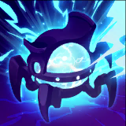
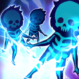

SKILL 01 • ULTIMATE
Tes'Lin's Overdrive
Isaac fires a massive electrical charge across the battlefield, dealing Physical Damage to every enemy it passes through.
The damage scales with Isaac's Physical Attack.
The ability also activates Isaac's Weapon Artifact, granting Magic Defense to the entire team.
Against heavy magical compositions, this combination becomes extremely powerful. While the charge damages enemies, Isaac's allies become harder to eliminate through magical burst damage.
ANTI-MAGE VALUE: Tes'Lin's Overdrive deals Physical Damage while triggering a team-wide Magic Defense bonus through Isaac's Weapon Artifact.
Isaac launches drones that increase the Physical Attack of himself and every ally positioned behind him for eight seconds.
Progress Engineers also receive additional Armor Penetration. The strength of this buff scales with Isaac's Physical Attack.
Heroes such as Ginger, Astrid and Lucas, Daredevil, Fox and Lara Croft become more dangerous with Isaac's support.
Fafnir benefits from additional Physical Attack, strengthening his Runic Blade and Runic Shield.
More Physical Attack improves basic attacks and skills that scale with that stat, while Armor Penetration helps Engineers threaten heavily armored opponents.
KEYWORD: BUFF. Observer Drones provide eight seconds of Physical Attack support, with additional Armor Penetration for Progress Engineers.
Isaac launches drones that create protective shields for himself and the allies positioned in front of him.
These shields absorb both Physical and Magical Damage. If the protected Heroes are Engineers, they also receive healing.
Shield strength scales with Isaac's Physical Attack.
This becomes particularly dangerous when Isaac is combined with Julius and Judge.
Julius creates shields. Isaac creates shields. Judge creates shields. Together, they produce repeated layers of protection that allow Progress teams to survive tremendous incoming damage.
KEYWORD: SHIELD. Isaac protects himself and allies in front of him while healing protected Engineers. Julius + Judge + Isaac creates an exceptionally durable Progress core.

SKILL 04 • PASSIVE
High-Voltage Module
High-Voltage Module upgrades Tes'Lin's Overdrive.
Isaac's electrical charge now knocks enemies backward while reducing their Armor for five seconds. The closest enemy is knocked back twice.
Unlike Isaac's other abilities, this effect scales with his Magic Attack.
Nebula can greatly increase both Magic Attack and Physical Attack for nearby allies, allowing Isaac to apply stronger Armor reduction while improving his team's physical damage.
IMPORTANT SYNERGY: Nebula's Magic Attack support strengthens Isaac's Armor reduction, while Physical Attack improves his damage, shields and buffs.